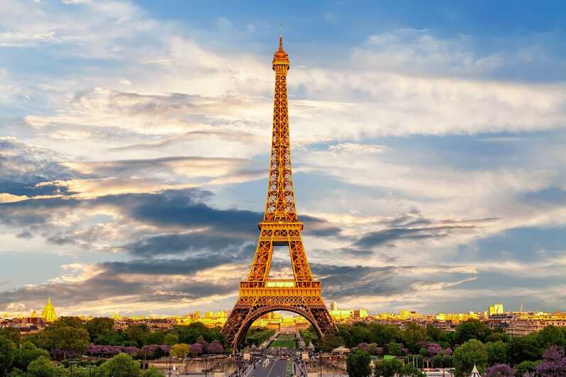
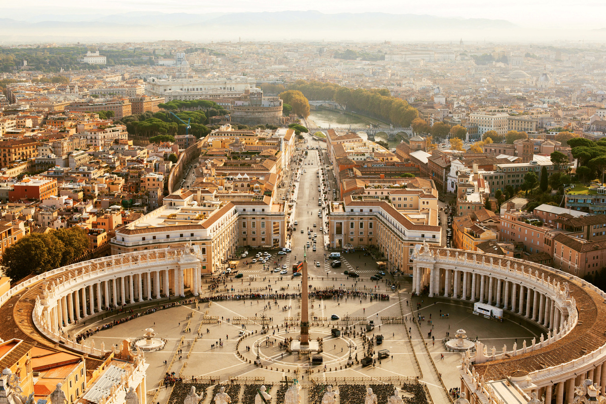
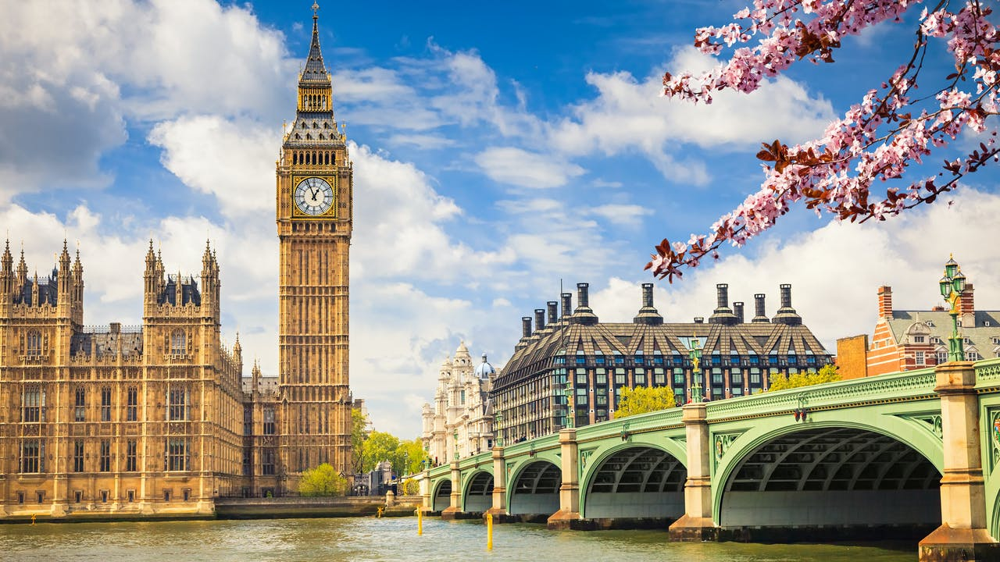

Rio de Janeiro is one of the biggest cities in Brazil and a popular
destination for tourists.
Rio de Janeiro is one of the most visited cities in
South America and hosted the sommer olympics in 2016. With various
famous landmarks like Christ the Redemer, Sugarloaf Mountain, Copacabana
and the Maracana Stadium it is a beautiful country to visit. Rio was founded
in 1565 by the portuguese and was a domain for the portuguese Empire. Rio is
now the headquarters to Brazilian oil, mining and telecommunications companies.
Brazil is also known for its Carnival, football and music like samba and bossa nova.
Rio is a unique place worth traveling to in the post corona era.
Paris

Paris is the Capital of France and the most and has an estimated
population of 2.148.271 residents as of 2020(wikipedia). Paris is one of the most
visited cities in the world and has contributed greatly in the aspects of sports.
Paris host the annual French Open Grand Slam tennis tournament and every July
the Tour the France finishes in Paris. The city hosted
the Olympic games in 1900,1924 and will host the Summer Olympics in 2024.
Paris also have top culural attractions like Basilica of Sacre-Cour, Louvre and the
famous Eiffel Tower. Since the 17th century Paris has been one of Europes major
centres of finance, diplomacy, fashion, science and arts and is a fine citie to travel to.
Rome

Roma witch is the capital of Italy and the most populous city in Italy. Vatican City is an independent country
inside the city boundries of Rome and the only existing country inside a city. Roman mythology dates the founding
of Romw at around 753 BC but the area have been inhabited for much longer making
it one of the oldest occupied cities in Europe.(wikipedia) Rome became the capital of the
Roman Empire. Rome is one of the most important destination for tourists in the world. Tourists destination
like the Musei Capitolini, Vatican Museum and the Catacombs along with the archeological and artistic treasures in
the city makes it a perfect city for tourists. Rome also contains the Colosseum witch might be
one of Rome's most iconic archeological sites and is regarded as a wonder of the world. Rome is definetly
a place to visit as a tourist when the opportunity is there.
London

London is the Capital of England and the United Kingdom and is also one of
the most powerful and influential city in the world. London witch was founded
by the Romans with the name Londinium has a diverse range of people and cultures
(Wikipedia). Tourism is one og London prime industries and with many attractions
like castles, museums, The Big Ben, Tower in London and the London Eye. It is one of
the most visited cities in Europe with a good reason and the same reasons should
make you think about taking the trip.
New York
New York is the most populous city in the United States with an estimated
population of 8,336,817 (wikipedia). New York is the most linguistically diverse
city in the world and is home to the highest number of billionaires of any city in the
world(wikipedia). New York also have many tourist destinations with Times Square,
the Empire State building, the Statue of Liberty being one of the most popular. The city
also have museums, parks and is a fine place for luxury shopping.